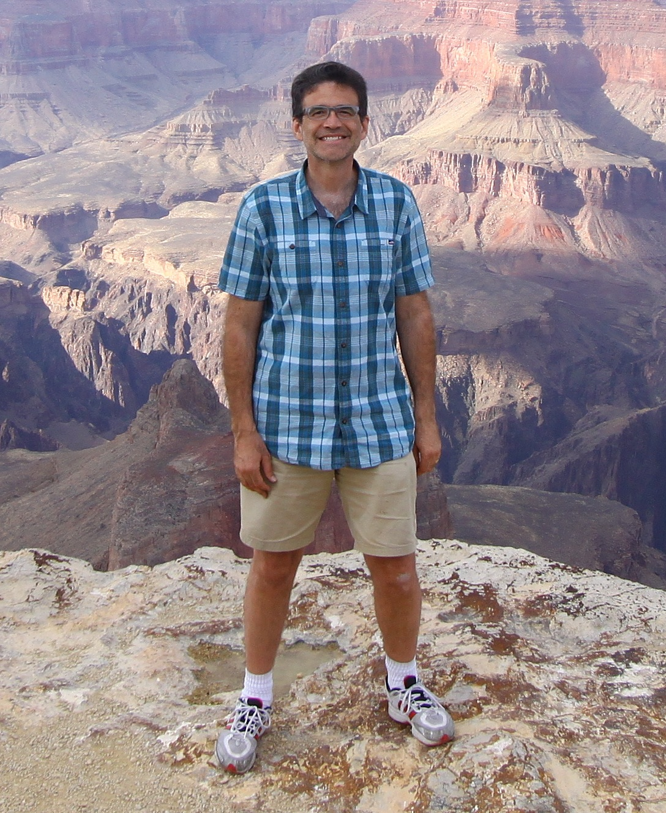

Bio:
Chandler HC Smith
0-University
I was born in Marysville Arizona. Raised in this sweet town for only 10 months and then we moved to Colorado, where we lived for 10 years. Then we moved to California where spent the majority of our formative years.
High School with its ups and downs. University with its fun challenging classes.
During University I spent winters Studying, Snowboarding, making my own snowboardings, reading philosophy, and enjoying life. I spent summers at the beach, usually twice. Once in the morning and once at night. I loved Skimboarding and was actually pretty good - sorry, no photos.
Married - No Kids
One of the next amazing journeys in my life was getting married. I have been very blessed with a wonderful wife. She is incredible.
We enjoyed living in California and all that goes with work, housework, and love
Married - 3 Kids and Moving to Europe
My wife is always full of wonderful surprises. One night she came home and asked if I would want to move overseas? I said, "If I can find a job, sure, why not?"
Before I knew it I had a job in the Czech Republic.
I really consider these to be some of my most formative years.
The interest in adventure really kicked into full swing and boy did we see the world. This was one of the best 5 years of our lives. We added 2 kids to the original 1, bringing the total to the current 3. We travelled on 3 or 4 continents, depending on whether you consider England a continent.
Prague, a Time of Change
This was a time of change, of rediscovering myself.
What did I want out of life?
This is where my love of Photography and design really took life.
I knew that I wanted to add something to this world that would revolutize people's lives.
I am convinced that I can do this through coding/programming and creating/inventing!
Dev BootCamp
This is the journey up and to the point of Preparing for Dev BootCamp. I have spent several months getting as ready as I could for this moment.
My time for programming having been in competiton with:
- I have a full-time job and a part-time job.
- I have a wife.
- I have a family which includes 3 kids.
- I have to still be me.
I have still put it as a number one priority.
Dev BootCamp
I am so excited and looking forward to learning and contributing. I am so excited about working with others who have the same passion and getting to learn from them.